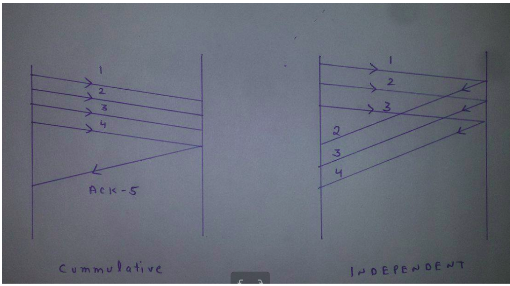
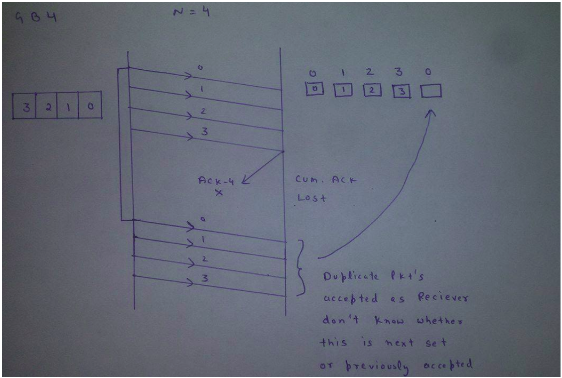
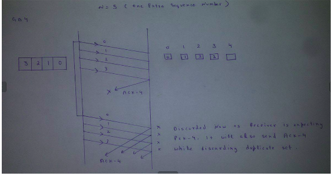

Please refer this as a prerequisite article.
Sliding Window Protocol (sender side)| set 1
Sliding Window Protocol is actually a theoretical concept in which we have only talked about what should be the sender window size (1+2a) in order to increase the efficiency of stop and wait arq. Now we will talk about the practical implementations in which we take care of what should be the size of receiver window. Practically it is implemented in two protocols namely :
1. Go Back N (GBN)
2. Selective Repeat (SR)
In this article, we will explain you about the first protocol which is GBN in terms of three main characteristic features and in the last part we will be discussing SR as well as comparison of both these protocols
Sender Window Size (WS)
It is N itself. If we say protocol is GB10, then Ws = 10. N should be always greater than 1 in order to implement pipelining. For N = 1, it reduces to Stop and Wait protocol.
Efficiency Of GBN = N/(1+2a) Where a = Tp/Tt
If B is the bandwidth of the channel, then Effective Bandwidth or Throughput = Efficiency * Bandwidth = (N/(1+2a)) * B.
Receiver Window Size (WR)
WR is always 1 in GBN.
Now what exactly happens in GBN , we will explain with a help of example. Consider the diagram given below. We have sender window size of 4. Assume that we have lots of sequence numbers just for the sake of explanation. Now the sender has sent the packets 0, 1, 2 and 3. After acknowledging the packets 0 and 1, receiver is now expecting packet 2 and sender window has also slided to further transmit the packets 4 and 5. Now suppose the packet 2 is lost in the network, Receiver will discard all the packets which sender has transmitted after packet 2 as it is expecting sequence number of 2. On the sender side for every packet send there is a time out timer which will expire for packet number 2. Now from the last transmitted packet 5 sender will go back to the packet number 2 in the current window and transmit all the packets till packet number 5. That’s why it is called Go Back N. Go back means sender has to go back N places from the last transmitted packet in the unacknowledged window and not from the point where the packet is lost.

Acknowledgements
There are 2 kinds of acknowledgements namely :
- Cumulative Ack – One acknowledgement is used for many packets. Main advantage is traffic is less. Disadvantage is less reliability as if one ack is loss that would mean that all the packets sent are lost.
- Independent Ack – If every packet is going to get acknowledgement independently. Reliability is high here but disadvantage is that traffic is also high since for every packet we are receiving independent ack.

GBN uses Cumulative Acknowledgement. At the receiver side, it starts a acknowledgement timer whenever receiver receives any packet which is fixed and when it expires, it is going to send a cumulative Ack for the number of packets received in that interval of timer. If receiver has received N packets, then the Acknowledgement number will be N+1. Important point is Acknowledgement timer will not start after the expiry of first timer but after receiver has received a packet.
Time out timer at the sender side should be greater than Acknowledgement timer.
Relationship Between Window Sizes and Sequence Numbers
We already know that sequence numbers required should always be equal to the size of window in any sliding window protocol.
Minimum sequence numbers required in GBN is N+1.
Bits Required will be ceil(log2(N+1)).
The extra 1 is required in order to avoid the problem of duplicate packets as described below.
Consider an example of GB4. Sender window size is 4 therefore we require a minimum of 4 sequence numbers to label each packet in the window. Now suppose receiver has received all the packets(0, 1, 2 and 3 sent by sender) and hence is now waiting for packet number 0 again(We can not use 4 here as we have only 4 sequence numbers available since N = 4). Now suppose the cumulative ack for the above 4 packets is lost in the network. On sender side, there will be timeout for packet 0 and hence all the 4 packets will be transmitted again. Problem now is receiver is waiting for new set of packets which should have started from 0 but now it will receive the duplicate copies of the previously accepted packets. In order to avoid this, we need one extra sequence number. Now the receive could easily reject all the duplicate packets which were starting from 0 because now it will be waiting for packet number 4( We have added an extra sequence number now).
Trying with Sequence numbers 4.

Now Trying with one extra Sequence Number.

In the next article, we will explain Selective repeat and comparison between the 2 protocols.